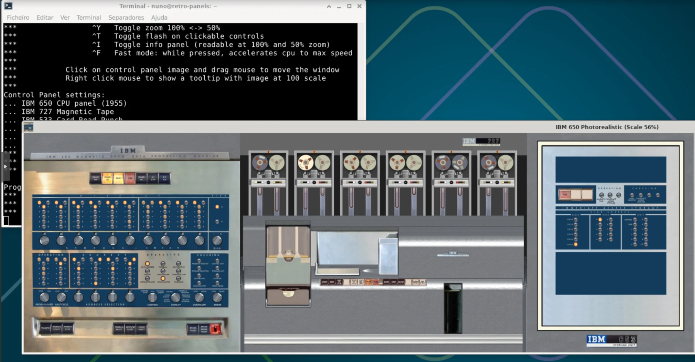
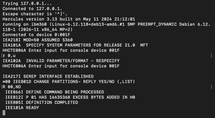
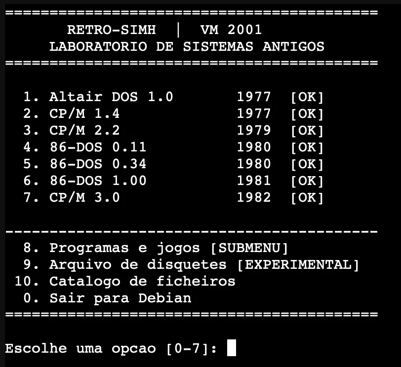
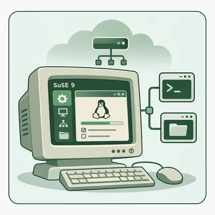

ARQUIVO DE EXPERIÊNCIAS REAIS · EST. 2026
A história da informática, em funcionamento.
De 1951 à atualidade, dos computadores a válvulas aos sistemas modernos. Um museu digital onde cada máquina é instalada, testada e documentada — incluindo aquilo que não correu bem.

Ferranti Mark I
Painel a 100% · Love Letters de 1952 · Linux nativo
01 / PERCURSO HISTÓRICO
Escolhe uma época.
Filtra as peças em destaque ou consulta a cronologia completa.
02 / COLEÇÃO EXPERIMENTAL
Da consola ao computador pessoal.
Ferranti Mark I
Painel a 100% · Love Letters executado
Explorar →
IBM 701
Painel original funcional
Explorar →
IBM 650
SORT 2 concluído
Explorar →
IBM NORC
Painel e fitas
Explorar →
Hewlett-Packard
Painel HP 1000 E-Series; modelos em teste
Explorar →
IBM OS/360 MFT
IPL concluído · consola 3215
Explorar →
Retro-SIMH
Altair DOS, CP/M e 86-DOS
Explorar →
IBM MVS 3.8j
TSO validado · Hercules
Explorar →
MS-DOS 6.22
Arranque e teclado português
Explorar →
Windows NT
Experiências em rede
Explorar →
SuSE Linux 9.0
Experiências de interoperabilidade
Explorar →O laboratório que mantém o museu vivo.
Proxmox, redes, armazenamento, automação e monitorização. A infraestrutura moderna que permite experimentar o passado.
Entrar no Home Lab →04 / ARQUIVO TÉCNICONão é apenas uma coleção de sucessos.
Instalações, comandos, erros, soluções, referências e experiências ainda por concluir.
Abrir biblioteca →